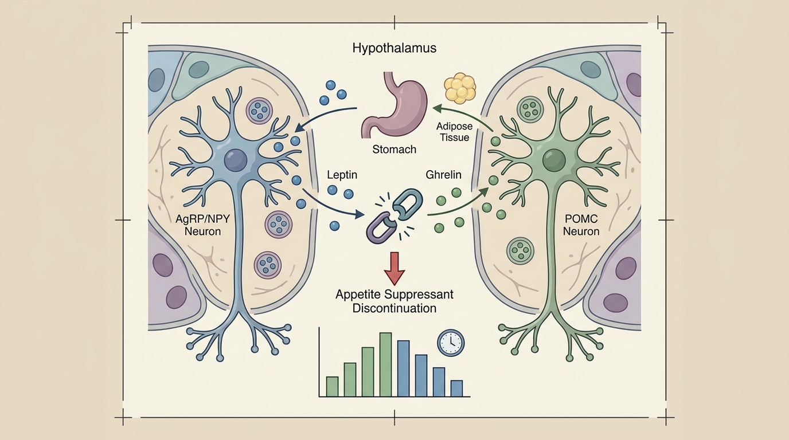

Post-Cessation Appetite Rebound After GLP-1 and Phentermine: Metabolic Management Principles to Lower Rebound Risk
Prolonged pharmacologic appetite suppression may induce compensatory reactivation of hypothalamic AgRP/NPY neurons, increased leptin resistance, and a surge in ghrelin, which academic literature suggests can lead to a sharp appetite rebound upon drug discontinuation. In anticipation of this, herbal medicine-based approaches supporting basal metabolic rate maintenance and physician-led 1:1 behavior modification care may be considered as adjunctive strategies for metabolic stabilization.
1. Appetite Suppression Mechanism of GLP-1 Agonists and the Biochemical Basis of Post-Cessation Weight Regain
GLP-1 receptor agonists and sympathomimetic appetite suppressants such as phentermine act directly on the central nervous system, artificially inhibiting the appetite regulation circuitry within the hypothalamic arcuate nucleus to produce short-term weight loss. However, when this pharmacologic intervention is prolonged, the body activates compensatory mechanisms to restore homeostasis, during which desensitization of the leptin signaling pathway and a compensatory surge of the hunger hormone ghrelin have been observed.
Specifically, sustained appetite suppression signals keep the hunger-inducing AgRP/NPY neurons within the hypothalamus in an inhibited state; however, the moment drug administration is discontinued, this previously suppressed neuronal population may undergo abrupt reactivation. This phenomenon resembles a compressed spring released, representing a physiological response rooted in neuroendocrine homeostatic rebound rather than a simple matter of willpower, carrying significant clinical implications.
Indeed, large-scale cohort data have shown that a substantial proportion of GLP-1 RA users discontinue medication use within one year, and the pattern of weight change following such discontinuation demonstrated a significant association with treatment reinitiation. This may be interpreted as evidence suggesting that drug discontinuation is not merely a matter of choice but is closely linked to an in-vivo metabolic rebound phenomenon[1].
Furthermore, in the case of potent GLP-1 class agents such as tirzepatide and semaglutide, meta-analyses have quantitatively confirmed a pattern in which post-cessation weight regain occurs in proportion to the original magnitude of weight loss. This suggests that the greater the intensity of pharmacologic appetite suppression, the larger the potential neurohormonal withdrawal magnitude, indicating that managing metabolic rebound following rapid weight loss is a clinically significant challenge.
2. Bodyall Korean Medicine Clinic's Herbal Metabolic Enhancement Mechanism for Basal Metabolic Rate (BMR) Maintenance and Sarcopenia Prevention

Unlike pharmaceutical appetite suppressants, the herbal medicine-based metabolic correction approach is designed not to abruptly block the central nervous system, but rather to gently elevate the body's inherent metabolic activity. The prescription principles applied within the BodyallFit Weight Loss Program (Metabolic Correction Protocol) focus on preventing basal metabolic rate decline and minimizing muscle mass loss while inducing body fat breakdown.
When weight loss is achieved solely through severe caloric restriction or potent pharmacologic suppression, muscle protein breakdown may occur concurrently, leading to a reduction in basal metabolic rate itself. This can paradoxically result in a body constitution that gains weight more easily after weight loss; the herbal medicine-based metabolic support principle addresses this by suppressing such muscle loss while inducing a thermogenesis response.
The trend of Basal Metabolic Rate (BMR) maintenance and sarcopenia prevention observed in Bodyall Korean Medicine Clinic's accumulated metabolic correction herbal medicine clinical experience aligns scientifically with the gradual metabolic regulation principle, which contrasts with the abrupt neurohormonal withdrawal mechanism underlying rebound occurrence as presented in the cited academic study[2].
| Comparison Item | GLP-1 Pharmaceuticals (Saxenda, Ozempic, etc.) | BodyallFit Herbal Metabolic Mechanism |
|---|---|---|
| Mechanism of Action | Direct central nervous system inhibition (strong appetite blockade) | Gradual induction of basal metabolic rate and body fat breakdown |
| Rebound Upon Discontinuation | Risk of abrupt AgRP/NPY neuron reactivation | Oriented toward gradual regulation without abrupt withdrawal rebound |
| Impact on Muscle Loss | Potential for concurrent muscle mass reduction reported | Minimization of muscle loss and support of thermogenesis response |
| Metabolic Stability | Concern for abrupt metabolic rate decline upon cessation | Rebound risk management through basal metabolic rate maintenance |
To supplement the potential metabolic gap that may arise during the pharmacologic tapering process, considering a herbal medicine-based approach that supports basal metabolic rate maintenance may be an academically reviewable option from a metabolic stabilization perspective. However, individual physical condition and concurrent medication use must always be determined through consultation with a specialist physician.
3. Academic Clinical Literature Analysis on Leptin-Ghrelin Recalibration Failure and Hypothalamic Metabolic Support
The phenomenon of weight regain following discontinuation of obesity medications is a topic actively researched in recent academia, with its mechanisms becoming progressively clearer through numerous large-scale data analyses. A large-scale retrospective cohort study targeting American adults analyzed 96,544 GLP-1 RA users and found that 65.1% of the patient group without type 2 diabetes discontinued medication use within one year.
Particularly noteworthy in this study is the fact that the pattern of weight regain following drug discontinuation showed a significant correlation with subsequent treatment reinitiation. This suggests that reduced medication adherence is not merely an individual patient issue, but rather a cyclical pattern in which weight and metabolic changes occurring after discontinuation influence clinical decisions regarding reinitiation. Such data may be referenced as background evidence supporting the necessity of lifestyle-centered intervention, wherein gradual dietary restructuring and activity pattern correction through physician-led 1:1 behavior modification coaching, during or after the drug tapering process, may assist in metabolic stabilization[1].
Meanwhile, a systematic literature review and meta-analysis addressing body composition changes following GLP-1 receptor agonist discontinuation presented more specific quantitative data. In the semaglutide and tirzepatide user groups, an average weight regain of 9.69 kg was observed following drug discontinuation, and this tended to be proportional to the originally lost weight magnitude.
These quantitative results are interpreted as metabolic-physiological evidence suggesting that if pharmacologic appetite suppression persists, it may be accompanied by compensatory reactivation of hypothalamic AgRP/NPY neurons, increased leptin resistance, and a ghrelin surge, potentially leading to a sharp rebound phenomenon upon drug discontinuation. In contrast to this abrupt neurohormonal withdrawal phenomenon, the herbal medicine-based metabolic correction approach may be proposed as a physiological principle that supports weight maintenance without abrupt withdrawal-type rebound, through gradual elevation of basal metabolic rate (BMR) and progressive regulation of hypothalamic satiety signaling[2]. It should be noted, however, that both papers address the weight regain mechanism and prescription patterns associated with drug discontinuation itself, and do not clinically demonstrate the direct efficacy of a specific Korean medicine treatment; they are utilized here solely as reference materials for academic mechanistic comparison.
In summary, the data from both papers support the reality of the abrupt neurohormonal rebound phenomenon occurring upon drug discontinuation, providing an academic background wherein the gradual metabolic support principle proposed by the BodyallFit Weight Loss Program (Metabolic Correction Protocol) and physician-led behavior modification care may be considered as one safe traditional Korean medicine management option assisting metabolic stabilization during this period.
4. The Metabolic Correction Process of the BodyallFit Weight Loss Program
The BodyallFit Weight Loss Program does not simply follow a method of appetite suppression; rather, it follows a process designed to comprehensively diagnose an individual's metabolic status and lifestyle habits, aiming to reduce body fat while maintaining basal metabolic rate. This particularly focuses on buffering the metabolic rebound that may occur in patient groups with a history of GLP-1 class medications or phentermine use.
In the first stage, individualized prescription principles are established through precise diagnosis of constitution and metabolic status; in the second stage, behavior modification coaching is conducted in parallel through 1:1 close consultation with the Chief Director to gradually correct dietary structure and activity patterns. This approach holds academic significance in that it does not rely solely on pharmacologic appetite suppression, but rather promotes sustainable metabolic stabilization through lifestyle improvement.
In the third stage, metabolic correction is achieved through herbal prescriptions that simultaneously support body fat breakdown and basal metabolic rate maintenance; in the fourth stage, muscle mass loss and metabolic rate changes are continuously monitored through regular body composition analysis to adjust the prescription accordingly. This step-by-step process represents an attempt to implement, upon academic evidence, a principle that supports gradual weight management without abrupt neurohormonal withdrawal.
In conclusion, the rebound phenomenon that may occur following pharmacologic interventions such as GLP-1 class agents and phentermine is academically explained as being attributable to an abrupt rebound of the hypothalamic neuroendocrine system; the metabolic correction principle of the BodyallFit Weight Loss Program and 1:1 behavior modification care, which addresses this, may be considered one safe traditional Korean medicine approach that gently supports basal metabolic rate while promoting sustainable weight management.
References
- Rodriguez, et al. (2024), 'Discontinuation and Reinitiation of GLP-1 Receptor Agonists Among US Adults with Overweight or Obesity'. DOI: 10.1101/2024.07.26.24311058
- Berg, et al. (2025), 'Discontinuing glucagon‐like peptide‐1 receptor agonists and body habitus: A systematic review and meta‐analysis', Obesity Reviews. DOI: 10.1111/obr.13929